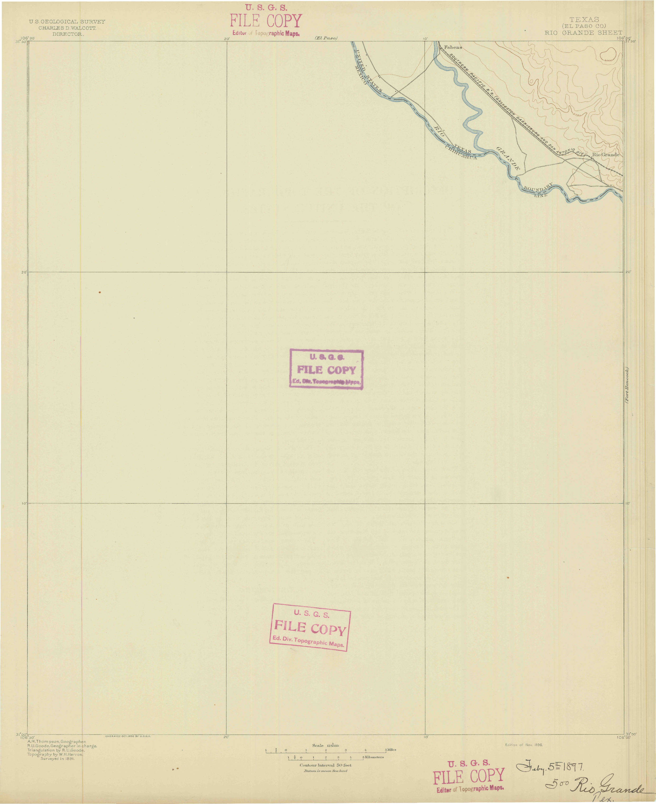

| YEAR/DATE | TITLE | PUBLICATION/URL | HISTORICAL MAP DOWNLOAD | TRACED BY | TRACE Completed ON | MAP AREA | RIVER TRACING DOWNLOAD | |
|---|---|---|---|---|---|---|---|---|
| Area 1 | ||||||||
 |
1852 1889 1899 1907 |
Relative positions of Rio Grande near El Paso between 1852 and 1907 | Internation Boundary Commission | georeferenced | Patrick O'Shea | 04/21 | El Paso / Ciudad Juárez | (geojson):1852 (geojson):1889 (geojson):1899 (geojson):1907 |
 |
1896 | El Paso, TX 1896 | USGS | GeoTiff | Chris Taylor | 23-Sep | El Paso / Ciudad Juárez | (geojson):1890s |
|  | 1896 | Rio Grande, TX 1896 | USGS | GeoTiff | Landon Wade | 23-Sep | El Paso / Ciudad Juárez | (geojson):1890s |
 |
1894 | Fort Hancock, TX 1894 | USGS | GeoTiff | Chris Taylor | 23-Sep | El Paso / Ciudad Juárez | (geojson):1890s |
 |
1897 | Eagle Mountain, TX 1897 | USGS | GeoTiff | Chris Taylor | 23-Sep | El Paso / Ciudad Juárez | (geojson):1890s |
 |
1953 | El Paso, TX 1953 | USGS | GeoTiff | Daniel Rios | El Paso / Ciudad Juárez | (geojson):1890s |